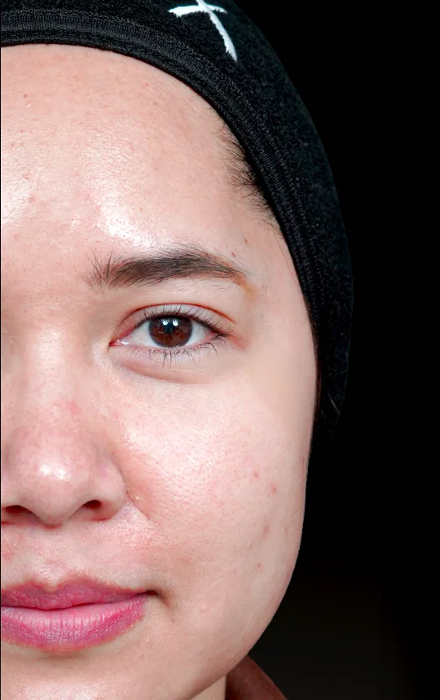

No. 7 · Second half · Glow
Profhilo
Profhilo is 64 mg of hyaluronic acid that hasn't been cross-linked, so it spreads evenly through the skin and hydrates it from inside.
It suits dry, dull skin, early fine lines and skin that has started to sag, and it keeps the shape of your face as it is.
What it does
Profhilo hydrates from inside, and the skin firms up over two months.
Act I
The points
Your doctor injects a set amount at 5 points on each side of the face.
Act II
The spread
The gel isn't cross-linked, so it spreads out evenly from each point.
Act III
The firming
It draws water into the skin and prompts collagen and elastin, so the skin grows firmer.
Not its dance
- Volume and shapeProfhilo hydrates the skin while filler adds volume and changes shape.See Filler
- An infection on the areaYour doctor treats it first and books Profhilo after.
- A permanent resultIt lasts about 6 to 12 months, and a top-up keeps it going.
Where it goes
The seating plan for Profhilo
- Cheeks
- Forehead
- Temples
- Under-eyes
- Smile lines
- Chin
- Jawline
A face session uses about 2 cc, placed at 5 points on each side.
Your fitting
Step by step at the clinic
How the evening goes
From the first dance to the last waltz
- Right afterSkin looks a little smoother
- Day 1 to 2Redness at the points fades
- Month 1Second session
- Month 1 to 2Clearest result
- Month 6 to 12Time for a top-up
The grand entrance
Before and after
Profhilo at Apex. Drag the line to compare.

Individual results vary.
Prices
Profhilo at Apex
| Profhilo | Price |
|---|---|
| Regular price | from 36,000 baht |
Invitation
Profhilo at Apex
25,000 baht
Prices and promotions change, so check the latest on LINE @apexbeauty.
Before and after
Etiquette for the evening
Before you come
After you leave
- Day 1 to 2
- Redness at the points fades
- 1 to 2 weeks
- No laser or heat treatments
Questions
What people ask us
Does it hurt?
A little. The needle is small, there are only 10 points and numbing cream can go on first.
How many sessions do I need?
Two, about a month apart, and the result is clear within 1 to 2 months. Some people have a third.
How is it different from filler?
Filler adds volume and shape in one area. Profhilo spreads through the skin to hydrate and firm it.
Can I have laser afterwards?
Wait at least 1 to 2 weeks before laser or heat treatments.
How often do I top up?
One session every 6 to 12 months after the first course.
Sources
- Apex Medical Center, "What is Profhilo", apexmedicalcenter.co.th/profhilo